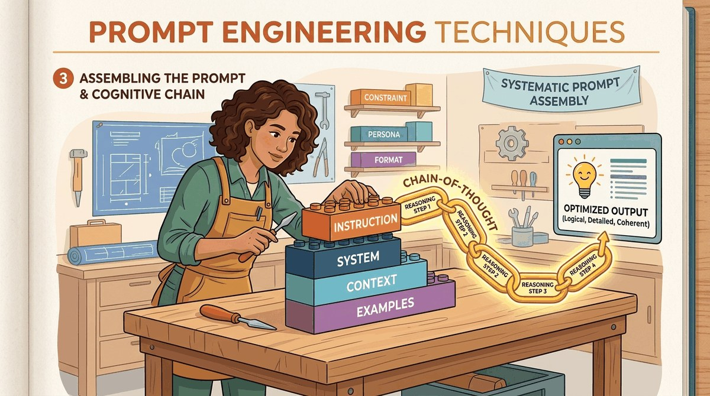

"The art of prompting is less about telling a machine what to do and more about learning what it already knows how to do, if only you ask the right way."
Prompt, Verbally-Persuasive AI Agent
You can call an API (Chapter 13). The question is what to put in the prompt. This chapter is the craft of prompt engineering: zero-shot vs. few-shot, role prompts, chain-of-thought, self-consistency, ReAct, and the prompt patterns that actually move the needle in production. Prompt engineering is not over, it is the lowest-cost knob you have, and this chapter teaches you when to turn it before reaching for fine-tuning.
Chapter Overview
Prompting is programming with natural language. Every interaction with a large language model begins with a prompt, and the quality of that prompt determines the quality of the output. Yet most practitioners treat prompt engineering as an ad hoc trial-and-error process rather than a systematic discipline. This chapter changes that by presenting prompt engineering as a structured craft with well-defined techniques, measurable outcomes, and principled optimization strategies.
We begin with the foundational techniques: zero-shot and few-shot prompting, role assignment, system prompt design, and template construction. Next, we explore reasoning strategies that unlock the model's ability to solve complex problems: chain-of-thought prompting, self-consistency, tree-of-thought exploration, and the ReAct framework that interleaves reasoning with action. The third section covers advanced patterns including self-reflection loops, meta-prompting, prompt chaining, and automated prompt optimization with DSPy. Finally, we address the critical topics of prompt security and optimization: injection attacks, defense strategies, structured output enforcement, prompt compression, and systematic testing.
By the end of this chapter, you will have a practical toolkit for designing, composing, and securing prompts across a wide range of applications, from simple classification tasks to complex multi-step reasoning pipelines.
When you write a SQL query, the words are tiny but the syntax matters enormously; one missing comma and the database returns nothing. Prompts are the same; a few words of system instruction can be the difference between an assistant that pleases users and one that hallucinates legal advice. Treating prompts as small, testable, version-controlled programs is what separates prompt engineering from typing hope into a text box.
Prompt engineering is the most accessible and often the most cost-effective way to improve LLM output quality. The techniques here, including few-shot prompting, chain-of-thought, and structured output generation, apply directly to RAG systems (Chapter 23), agents (Chapter 26), and evaluation (Chapter 34).
- Design effective zero-shot, few-shot, and role-based prompts with measurable quality improvements.
- Construct system prompts and prompt templates with variable injection for production applications.
- Implement chain-of-thought, self-consistency, and tree-of-thought reasoning strategies.
- Apply the ReAct framework to interleave reasoning with external tool use.
- Build self-reflection and iterative refinement loops that improve output quality across multiple passes.
- Identify and defend against prompt injection attacks (direct, indirect, jailbreak variants).
- Enforce structured output with JSON mode, Pydantic models, and the Instructor library.
- Apply automated prompt optimization using DSPy, OPRO, and prompt compression techniques like LLMLingua.
- Design prompt testing suites with regression tests, A/B experiments, and version control.
- Design effective zero-shot, few-shot, and role-based prompts with measurable quality improvements
- Construct system prompts and prompt templates with variable injection for production applications
- Implement chain-of-thought, self-consistency, and tree-of-thought reasoning strategies
- Apply the ReAct framework to interleave reasoning with external tool use
- Build self-reflection and iterative refinement loops that improve output quality across multiple passes
- Use meta-prompting and prompt chaining to decompose complex tasks into manageable sub-tasks
- Identify and defend against prompt injection attacks (direct, indirect, and jailbreak variants)
- Enforce structured output with JSON mode, Pydantic models, and the Instructor library (covered in depth in Section 11.2; this chapter addresses the security and reliability dimensions of structured output)
- Apply automated prompt optimization using DSPy, OPRO, and prompt compression techniques like LLMLingua
- Implement context engineering with MCP (Model Context Protocol) for dynamic context assembly in production applications
- Design prompt testing suites with regression tests, A/B experiments, and version control
Prerequisites
- Chapter 4: Decoding Strategies (temperature, sampling, how generation works)
- Chapter 11: Working with LLM APIs (API calls, message formats, parameter tuning)
- Basic Python programming and familiarity with the OpenAI or Anthropic client libraries
- Conceptual understanding of how transformer models process and generate text
Sections
- 12.1 Foundational Prompt Design Why does prompting matter? Entry
- 12.2 Chain-of-Thought & Reasoning Techniques Why reasoning techniques matter. Intermediate
- 12.3 Advanced Prompt Patterns From manual craft to automated optimization. Advanced
- 12.4 Prompt Security & Optimization Prompts are code, and code needs security and testing. Advanced
- 12.5 Automatic Prompt & Context Engineering Manual prompt engineering does not scale. Advanced
What's Next?
Next: Chapter 13: Hybrid ML+LLM Architectures & Decision Frameworks. The best prompt in the world cannot fix the wrong tool for the job. Chapter 13 is the hardest engineering question in the book: when is an LLM actually the right answer, and when should you reach for a classifier, a regex, or a vector index instead? You will leave with a decision matrix that has prevented many a six-figure inference bill.